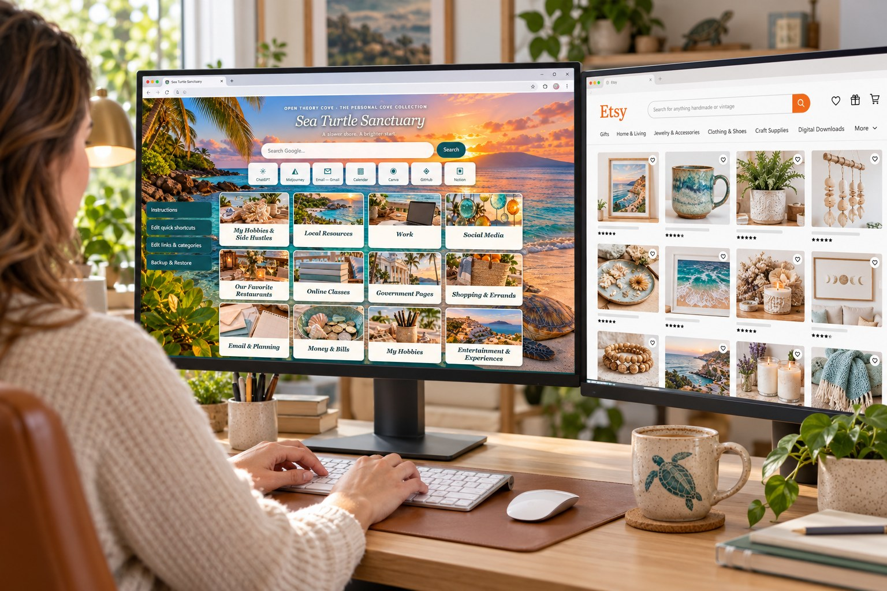
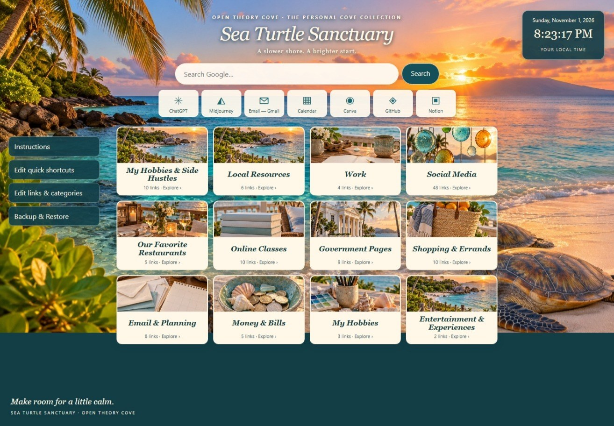

Home / Digital Downloads / Sea Turtle Sanctuary

Sea Turtle Sanctuary
A slower shore. A brighter start.
A customizable beach retreat for your browser’s Home button. Keep your favorite websites organized in categories you can rename, reorder, add, and edit.
Digital ZIP download · See Etsy for current price
Buy on Etsy ↗Purchase on Etsy to receive your download. No physical item will be shipped.

What’s included
- Self-contained HTML page with all artwork embedded.
- 12 editable categories and 120 general starter links.
- Google search and seven quick-access shortcuts.
- Live local date and clock.
- Category and link editing, plus JSON backup and restore.
- Read Me First HTML and text setup guides for Chrome, Edge, and Firefox.
Categories for everyday life
My Hobbies & Side Hustles, Local Resources, Work, Social Media, Our Favorite Restaurants, Online Classes, Government Pages, Shopping & Errands, Email & Planning, Money & Bills, My Hobbies, and Entertainment & Experiences.
Easy setup
- Download and unzip the package.
- Save it wherever you like on your computer and open the HTML file.
- Follow the guide to set your browser’s Home-button address.
- Personalize your links and save a backup.
Before you buy
Designed for desktop browsers. No coding, AI subscription, or installation required. The page opens offline; searches and external websites require internet. This does not automatically replace the New Tab page. Managed work or school computers may restrict local home pages.
Your edits save in the browser, not inside the HTML file. Use Backup & Restore before moving the file, changing browsers or computers, or clearing browser data. After moving the file, update your Home-button address. Clock accuracy follows your computer’s settings. No weather feed is included.
Personal use only. Do not resell or redistribute the files. Created with AI-assisted artwork and coding. Etsy’s applicable purchase and refund terms apply.
Buy on Etsy ↗